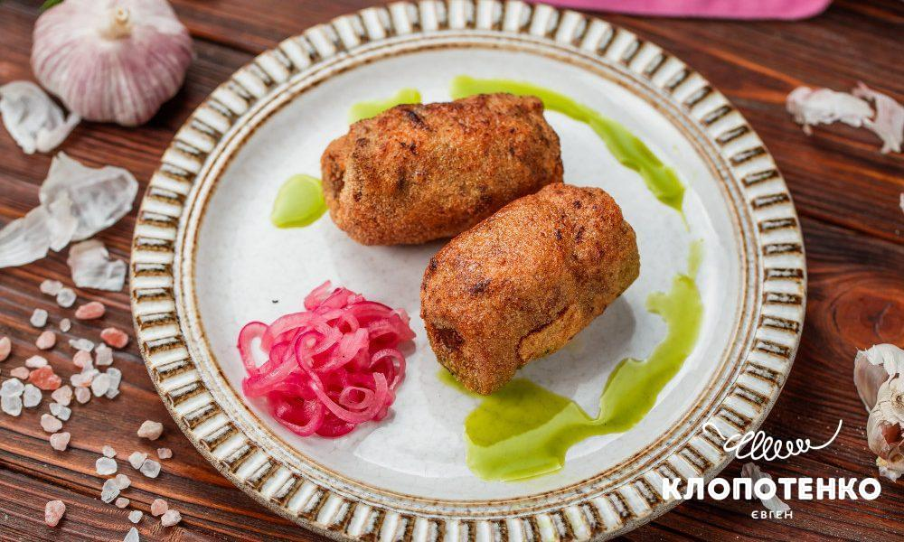

Kruchenyky (Meat rolls)

Description
If you're craving a savory, meaty dish that is both hearty and delicious,
look no further than this Ukrainian classic.
Made from thin slices of pork, these Ukrainian meat rolls are juicy, tender, and loaded with flavor.
Ingredients
- 250 g / 0.5 lb. pork loin
- 100 g / 3½ oz. pork fat or fatty bacon
- 100 g / 3½ oz. pork fat or fatty bacon
- a pinch of thyme
- 10-12 sprigs of fresh dill
- 50 g / ⅓ cup flour
- 50 g / ¼ cup semolina
- 2-3 tbsp. vegetable oil
- 1 egg
- salt, pepper
Steps
-
Preheat oven to 180°C / 350°F degrees.
-
Cut the pork loin into portion-sized pieces.
Cover with plastic wrap and pound each piece until tender.
Rub it with salt and pepper.
-
Mix small pieces of pork fat or fatty bacon with finely chopped garlic and dill.
Add thyme and blend in a food processor until smooth.
- Form the fat-and-herbs mass into logs, place each in the center of a pork loin piece,
leaving room on the sides, then roll up.
Secure each roll with a toothpick.
-
On to the two-step coating process. Coat each meat roll in flour,
then dip into egg wash, and then sprinkle with semolina.
- Place the rolls on a hot oiled pan and fry for several minutes until golden brown on all sides.
-
Move the rolls to a roasting tray lined with baking paper and roast for 15 minutes.